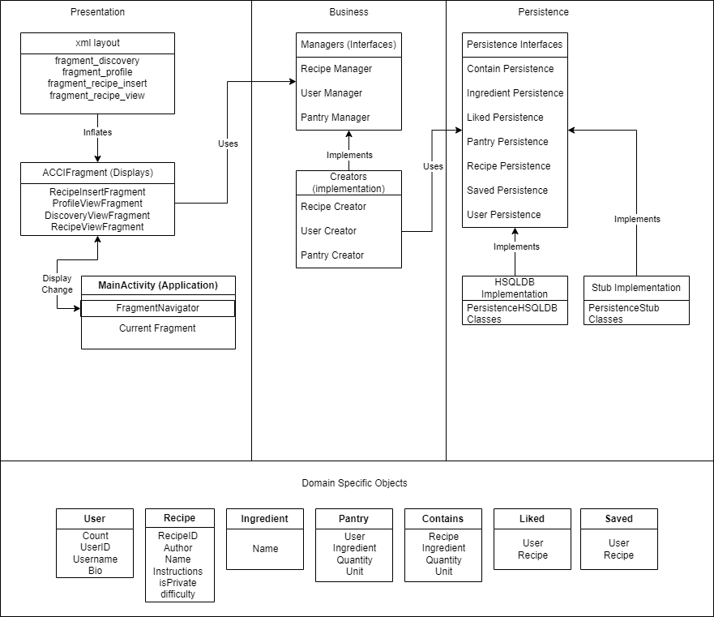

Vision Statement
Pantri Pal is all about creating a place for anybody to discover and share recipes while improving their cooking skills. Pantri Pal offers a digital cookbook to work alongside and enhance the cooking abilities of the user. A sense of community is created through the ability to share user recipes, and discover new recipes. Being digital, Pantri Pal will keep track of an up to date pantry, allowing users to store and update their ingredients. The user will be able to see recipes that contain ingredients in their pantry, as well as add missing ingredients to their grocery list for easier shopping.
Pantri Pal allows for in depth recipe customization, creation, and storage. By creating a virtual pantry, the app will be able to find recipes that the user can currently make. Pantri Pal also allows for recipe discovery, allowing users to find new and exciting recipes created by the community. By allowing the community to add new recipes, the database is always growing and changing. A difficulty rating will allow users to know at a glance how difficult a recipe is. Users will also be able to edit their existing recipes to change their own flavours.
From aspiring chefs to proficient cooks, anyone wanting to improve is encouraged to share their recipes and learn with Pantri Pal. Pantri Pal will be designed with an easy to learn interface, keeping users attention on discovering recipes and cooking. Pantri Pal is intended to help a wide array of users, from adolescents to young adults, those with an interest in cooking are welcome.
Pantri Pal is a unique look at cookbooks, by maintaining a virtual pantry this app becomes an invaluable tool. From something easy to difficult every dish requires ingredients, Pantri Pal’s virtual pantry feature allows users to create and edit their own pantry, keeping track of the ingredients they currently have. In this way, Pantri Pal’s ingredient list will notify the user when ingredients are low, adding them to a grocery list. Pantri Pal will also allow users to create new dishes, by adding their own recipes, encouraging users to experiment in the kitchen.
This app will be defined as successful provided the majority of users find the app helpful, and a rating off 3 stars or above on the play store is achieved. Furthermore, success will have atleast 35% of users find an increase in their overall cooking skills within 6 months of regular use.
Contributions
write who specalized in what here
Project Architecture
Our application follows the common three-layer architecture discussed in class. This consists of the presentation, business, and persistence layers, with domain specific objects that are accessed by all layers. This design increases the independence of each layer, to create layers that have low coupling. Further details about each layer is provided below.
Presentation Layer
The presentation layer controls the user interface and displays data to the user in your recipe manager database app. It acts as a bridge between the user and the app's functionality and interacts with the business logic and data layers to ensure the user is presented with accurate and relevant data.
MainActivity
- The only
AppCompactActivityin the project. - Its layout contains a
FragmentContainerView,BottomNavigationView, andToolBar. - Controls admin/system tasks/functionality and delegates display logic to the
Fragment(ACCIFragment) contained inside itsFragmentContainerView. - Uses a
FragmentNavigatorto manage navigation between different fragments.
FragmentNavigator
- A helper object that manages navigation between different fragments.
- Implemented as a stack which updates the display every time a fragment is pushed or popped.
- The top of the stack is the fragment to be displayed.
- Keeps a history of previously displayed fragments, allowing users to return to previous pages without creating new instances of the fragment.
RecipeAdapter
- Adapts a given list of
Recipeobjects to aRecyclerViewofRecipeCardViewHolder.
RecipeCardViewHolder
- The item that populates the
RecyclerView. - Holds the recipe's title, image, and an event listener that opens the recipe page for the selected item.
Fragments
ACCIFragment
- A subclass of
Fragmentthat adds new functionality for controlling display, such as showing/hiding action bar and navigation bar.
ACCIFragmentable
- An interface for
ACCIFragment.
RecipeInsertFragment
- Implements the GUI and functionality for creating new recipes.
- Linked to the recipe manager to create and modify recipes.
ProfileViewFragment
- Populates the layout with data of a given user.
- Allows users to view and modify their profile.
RecipeViewFragment
- Populates the data on the recipe page with a given recipe.
DiscoveryViewFragment
- Provides a
RecyclerViewwith a feed of recipes from the database. - Contains functionality to search for specific items in the view.
Business Layer
The business layer handles the application's logic and functionality, and connects the persistence/DSO layer with the presentation layer.
RecipeManager
The recipe manager is the interface required for users to create new recipe objects and add them to the database, as well as view, modify and search for existing recipes by recipe ID.
RecipeCreator
The recipe creator is the implementatiion of the recipe manager interface. The constructor requires it to be passed the necessary persistences.
UserManager
The user manager is the interface responsible for managing the user accounts and related data such as saved recipes.
UserCreator
The user creator is the implementation of the UserManager. the constructor requires it to be passed the related persistences.
Persistence Layer
The persistence layer handles all the functionality of saving and retrieving data. It consists of two parts: Interfaces and the classes that implement the interfaces. The interfaces lay out all of the functionality that will be provided to the Business layer, including function names, the arguments they take, and the form of the output that they will provide. This interface acts as a promise to the business layer, so the business layer can call the interface regardless of the class that actually implements the interface.
In Iteration 1, the classes that implemented the interfaces were stubs. These provided all the needed functionality of the interface when an app is running. but all the modified data is lost once the app is closed. The stubs saved lists of each of their respective DSOs, and have working functions that modify them. Commonly, the function return a given DSO (i.e. for the RecipePersistenceStub, the getRecipe function will return a Recipe object).
Currently, the classes that the app uses to implement the interfaces use HSQLDB. This is a database implementation made for Java and it uses sql commands to create tables, add entries, update entries, and delete entries. There is an implementation for each respective DSO and Interface, and since they implement the same interface as the Stubs, they have the same arguments and return types for each fuction.
Domain Specific Objects
Domain Specific Objects are classes that implement a certain form of data. Each DSO can have many different elements and methods to get or display the object. They are called by all layers of the architecture and are often passed between layers as the arguments to functions or the returned results. We designed the DSOs for this project to mimic the tables in a relational database, having them reference other DSOs when needed. The DSOs used for this project are described below.
User
The User DSO defines a user of the application. They have a Username, a User ID, and a Biography. This class is often referenced by other DSOs as it makes sense to group recipes by the user that made them, or display the recipes that a given user liked.
Recipe
The Recipe DSO is also a primary object. It has a recipe ID, author, name, instructions, difficulty level, and a boolean to determine whether it is private or not. The author is a User DSO, representing the user that created it.
Ingredient
The Ingredient DSO is the final primary object. It represents an ingredient that may be used in a Recipe or a users Pantry. It only contains a string that represents the ingredient's name.
Pantry
The Pantry DSO represents the many-to-many relationship between the User and Ingredient table. It represents the ingredients that a user currently has. Each entry has an associated User and Ingredient, but also has a quantity and a unit. For example, a user could have three apples in their pantry, or 6 slices of bread.
Contains
The Contains DSO represents the many-to-many relationship between the Recipe and Ingredient table. It is similar to the Pantry DSO, but represents the ingredients that are required for a given recipe. Each entry has a Recipe and Ingredient, as well as a quantity and a unit.
Liked
The Liked DSO represents one of the many-to-many relationships between the User and Recipe DSOs. A liked object has a User and Recipe and is created when a user likes a recipe.
Saved
The Saved DSO represents the other many-to-many relationship between the User and Recipe DSOs. A Saved object has a User and Recipe and is created when a user Saves a recipe. The difference betwheen the Liked and Saved DSOs is where they will be displayed. We plan to display the number of users that like a recipe on each recipe card, while a user will be able to navigate to a Saved Recipies page to view all of the recipes that they saved.
Architectural Diagram

Demonstration
A gif of the recorded screen will go here